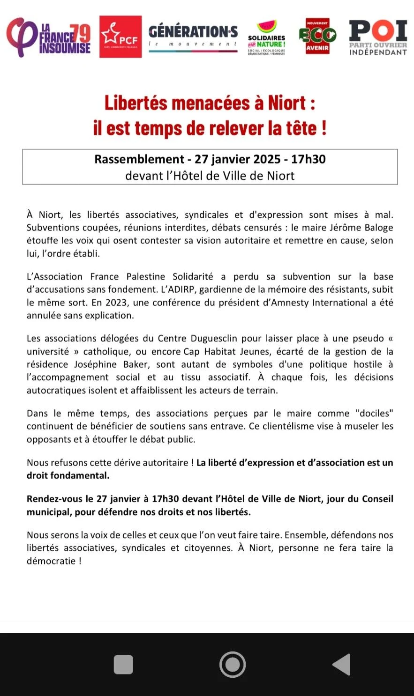

Appel archivé
À Niort le 27 janvier, rassemblement pour les libertés associatives et syndicales
Date indiquée par Facebook · 27 janvier 2025
Repères éditoriaux
Avec les organisations signataires, nous avions appelé à défendre les libertés associatives, syndicales et d’expression. Le rassemblement était annoncé pour le lundi 27 janvier 2025 à 17 h 30 devant l’hôtel de ville de Niort.
Texte conservé avec la publication
Pour défendre nos libertés associatives, syndicales et d’expression, rassemblement ce lundi 27 janvier à 17h30, devant l’Hôtel de Ville de Niort.

Sources
Archive rouge · export Facebook · AR-0002-FB-01202
À lire aussi · « Cercle de silence 167 ». La vidéo du rassemblement